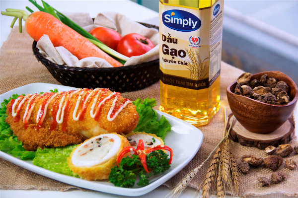

Tin tứcDịch Vụ 28/02/2018
Bà nội trợ nên chọn dầu gạo màu vàng hơi sẫm và sánh; dùng 20-30ml mỗi ngày; có thể trộn 40ml dầu gạo với 10ml sữa thay cho 50ml bơ...
Nhờ khả năng chống lão hóa và bảo vệ hệ tim mạch, dầu gạo đang được ưa chuộng tại nhiều nước phát triển. Người Nhật gọi đó là “dầu ăn của trái tim”. Còn tại Mỹ và châu Âu, dầu gạo được mệnh danh là "loại dầu ăn tốt cho sức khỏe" với khả năng phòng ngừa hơn 60 loại bệnh.
Vài năm gần đây, dầu gạo đã tới tay các bà nội trợ Việt, song nhiều người vẫn chưa rõ cách chọn và sử dụng đúng cách. Để có trái tim khỏe, bạn nên lưu ý những điều dưới đây.
Chọn dầu gạo màu vàng sẫm
Dầu gạo chứa hàm lượng cao chất chống oxy hóa gamma - oryzanol, vitamin E và 27 loại phytosterols, làm giảm cholesterol xấu trong máu hiệu quả. Đặc biệt, gamma - oryzanol có khả năng ngăn chặn ruột hấp thu cholesterol xấu từ thức ăn. Nghiên cứu trên Tạp chí Dinh dưỡng châu Âu cho thấy, sau 2 tuần sử dụng, gamma - oryzanol trong dầu gạo làm giảm 11,9% lượng cholesterol xấu trong máu.
Ngoài ra, gamma - oryzanol còn chống lại quá trình oxy hóa gấp 4 lần vitamin E, quét dọn các gốc tự do hữu cơ. Dầu gạo càng dồi dào dưỡng chất này, càng bảo vệ sức khỏe tim mạch hiệu quả. Bà nội trợ nên chọn loại nguyên chất có màu vàng hơi sẫm, trong suốt, mùi thơm nhẹ, nhà sản xuất uy tín, nếu muốn có hàm lượng cao.
|  |
| Dầu gạo không chỉ dùng để chiên xào, mà còn trộn salad, làm bánh... |
Sử dụng 20-30ml mỗi ngày
Mỗi lít dầu gạo nguyên chất cần đến 200kg lúa gạo để trích ly lớp vỏ cám. Cám gạo tươi phải sơ chế trong vòng 6h mới lưu giữ được tối đa các dưỡng chất quý giá. Quá trình tinh luyện này đòi hỏi công nghệ cao, máy móc hiện đại với nhiều công đoạn tách lọc phức tạp. Nếu tuân thủ quy trình, 100g dầu gạo có thể đạt 500mg gamma - oryzanol.
Để giảm cholesterol thừa, một người nên dùng ít nhất 50mg gamma - oryzanol mỗi ngày. Hàm lượng này tương đương 20-30ml dầu gạo (2-3 thìa canh).
Hạn chế đun nấu ở nhiệt độ cao
Dầu gạo còn là nguồn cung cấp chất béo lành mạnh với 30% acid béo bão hòa, 38% acid béo không bão hòa đơn, 31% acid béo không bão hòa đa. Đây là tỷ lệ cân đối lý tưởng, gần nhất với mức khuyến cáo của Tổ chức Y tế Thế giới (WHO) và Hội Tim mạch Mỹ (AHA).
Mặc dù bền nhiệt với điểm bốc khói cao 240 độ C, song không nên đun dầu gạo lâu ở nhiệt độ cao, nhằm đảm bảo các dưỡng chất tốt cho sức khỏe được giữ lại tối đa. Các acid béo không no gặp nhiệt độ cao sẽ bị oxy hóa, làm mất tác dụng có ích. Đặc biệt, không dùng dầu chiên lại nhiều lần, hoặc trộn lẫn dầu cũ vào mới.
Đa dạng công thức chế biến
Dầu gạo không chỉ dùng chiên xào, mà còn có thể trộn salad, làm bánh... Loại dầu này có mùi thơm nhẹ, không lấn át mùi vị thành phần chính, giúp món salad thơm ngon hơn. Ở Nhật, các đầu bếp thường chuộng trộn rau củ với dầu gạo hơn các loại khác.
Bà nội trợ cũng có thể trổ tài làm bánh bằng cách pha 40ml dầu gạo với 10ml sữa, thay cho 50ml bơ. Hỗn hợp thẩm thấu nhanh vào bột, giúp bánh mềm mịn và thơm ngon hơn. Nếu dùng thêm dầu gạo để quét chảo nướng bánh, việc dọn rửa cũng khá dễ dàng.
Bảo quản đúng cách
Để bảo quản dầu gạo đúng cách, cần trữ dầu ở nơi thoáng mát (khoảng 20 độ C). Tránh nguồn nhiệt, ánh sáng mặt trời chiếu trực tiếp. Đặc biệt, nên đậy nắp thật kỹ sau mỗi lần sử dụng để tránh oxy hóa các acid béo hữu ích.
Giáo sư Phạm Gia Khải
Nguyên Viện trưởng Tim mạch Việt Nam